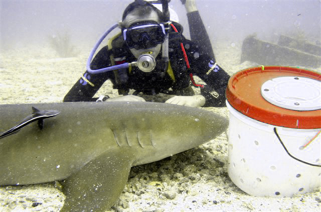
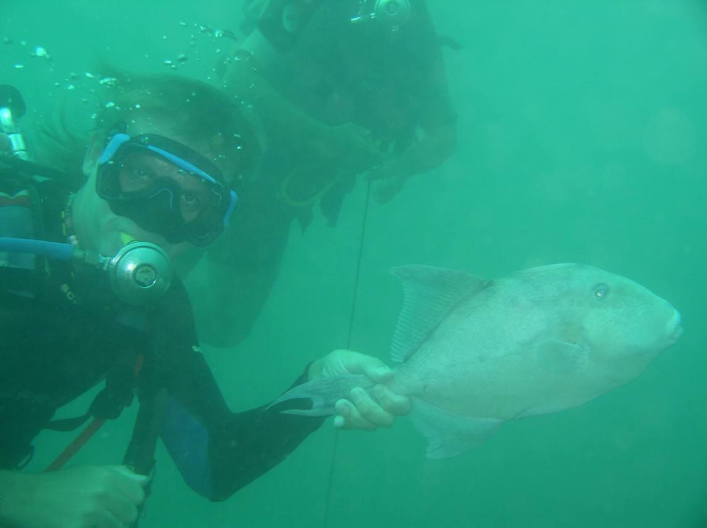
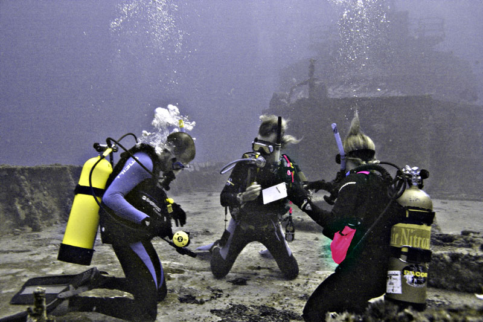

Self portrait after diving

Tame lemon sharks?

One that didn't get away

AOW deep dive on the Duane
I live in Miami, USA, where I work in the Department of Computer Science at the University of Miami. My main interest in Computer Science is Automated Theorem Proving. However, when I'm not proving theorems I tend to SCUBA dive ...
I used to be the Faculty advisor for the University of Miami SCUBA Club, and have worked as an instructor for Tarpoon Dive Center, in Miami Beach. I used to regularly dive off the the Big Com Ocean ...

I used to take my UM students diving with Divers Paradise, in Key Biscayne, and Atlantis Dive Center, in Key Largo.